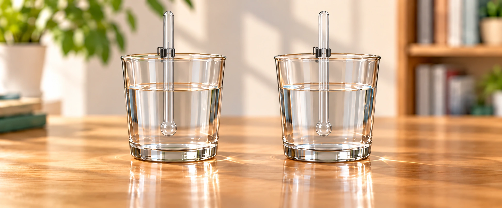

熱水變涼了，熱往哪裡去了？
小葵剛替兩杯水記下溫度，整理了幾樣器材，熱水和冷水的讀值就變了。她想知道水和周圍發生了什麼事，也想找出讓水溫維持久一點的方法。阿公提議，先追蹤溫度的變化，再找出熱傳遞的路徑。

從溫度變化，找到熱傳遞的路徑
六個學習區塊・一個單元小測熱往哪裡傳？
比較水與環境的溫度同樣的兩杯水，在不同環境會怎麼變？
先比較水與環境的溫度，再看熱往哪裡傳。
「在房間裡，熱水變涼、冷水變暖；可是冷水放進冰箱，卻會更冷耶！」
「同樣是冷水，周圍的溫度不同，變化就不一樣。如果周圍比熱水還熱，又會怎樣呢？」
房間 25°C

等待觀察熱由高溫處傳向低溫處。
流光為熱傳方向示意；切換環境回到起始水溫。
準備好，按開始觀察。
「原來不能只看水有多冷、多熱，還得比較它和周圍環境的溫度！」
「水溫描述冷熱，吸熱、放熱描述的是因溫差而傳遞的能量。換成兩個物體彼此傳熱，最後也會同溫嗎？」
熱平衡
從溫差走向同溫一熱一冷靠在一起，最後會怎樣？
比較金屬彼此及與室內環境的熱交換，觀察它們如何逐漸達到熱平衡。
一塊變冷、一塊變暖，它們最後會停在哪個溫度呢？
隔熱盒能減慢熱交換，卻不能完全隔絕。它們最後會跟誰一樣暖呢？
左右拖曳金屬，讓它們貼合或分開
左右方向鍵移動金屬；End 貼合另一塊，Home 往外分開。
初溫 A 60°C、B 20°C，室溫 25°C。時間與傳熱速度為教學示意。
原來拉開後溫度還會慢慢變；貼合時，兩塊就更快變得一樣暖！
兩塊同溫後，仍會和 25°C 的房間交換熱；最後和環境同溫，整體才達到熱平衡。熱又是怎麼傳過去的呢？
熱傳導
沿著材料追蹤熱鍋底受熱，把手為什麼也變暖？
沿著鍋身、接頭到握柄，觀察熱如何傳遞。
只有鍋底在受熱，把手怎麼也慢慢變暖了？
把手和鍋身連在一起。換成木柄，變化也會一樣快嗎？
追蹤鍋具的傳熱路徑
室溫 25°C・相同加熱條件

電熱板尚未開啟；按下「開始加熱」，讀數會自動更新。
原來熱會從鍋身傳到接頭，再沿著把手傳過來！
這是熱傳導。木材也會傳熱，只是較慢，所以常被用在握柄上。
熱對流
流動的水與空氣傳熱水和空氣怎麼把熱帶走？
觀察流動的液體與氣體如何攜帶能量，形成對流。
「這次水和空氣本身也在動，它們會把能量帶到別處嗎？」
「追蹤受熱部分的上升，看看周圍的流體怎麼補進來。」
水受熱後，較暖、密度較小的部分上升，周圍較冷的水補入。
箭頭與圓點表示流體的運動，用來觀察循環；不表示實際流速。
「水和空氣會形成循環，流動時也帶著能量移動。」
「這是對流。太陽和地球之間還有太空，能量又怎麼傳來呢？」
熱輻射
不接觸也能傳熱沒有碰到，也能傳熱嗎？
輻射不需要物質作為介質，也能傳遞能量。
「太空裡沒有空氣，太陽的能量怎麼到達地球？」
「觀察輻射的方向，再加入遮擋板比較直接照射的差異。」
輻射能穿越沒有空氣的太空，將能量傳向地球。
圖中比較直接照射；遮擋物也可能吸熱與再放熱。天體大小、距離為示意。
「原來不需要接觸，也不需要空氣作為介質，能量也能傳遞。」
「這就是輻射。現在找到了三種方式，試著減慢它們，讓水溫維持久一點。」
保溫與保冷
減慢不同路徑的熱交換怎麼讓熱水慢一點變涼？
整合傳導、對流與輻射，理解保溫與保冷的共同原理。
「如果讓熱交換慢一點，熱水就能保溫久一點吧？」
「一次改一種設計，看看主要影響哪條傳熱路徑。」
兩杯初始 60°C、環境 25°C，均已加蓋。各路徑以簡化模型比較；更改設計會回到相同起點。
「不同設計能減少不同路徑的傳熱；生活中也可能同時有好幾種方式。」
「保溫和保冷都在減慢熱交換。換成保冷水壺，這次由你判斷。」
單元小測
幫小葵找出保冷水壺的漏熱路徑
水壺裡是 10°C 的冷水，外面是 25°C 的環境，陽光正照在水壺上。
「這次要讓冷水維持低溫，我要先找出熱從哪裡進來。」
「先比較溫度，再分辨金屬、流動空氣和陽光這幾條路。」
互動用來比較熱傳方向與方式；時間、顏色與速率為教學示意。
回到溫度與熱單元總覽